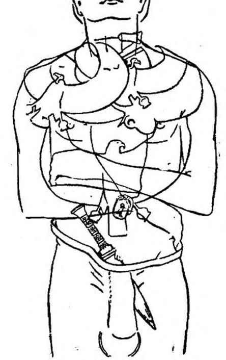
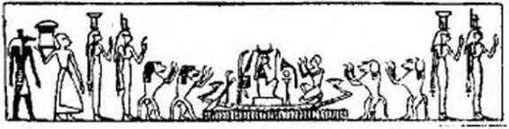
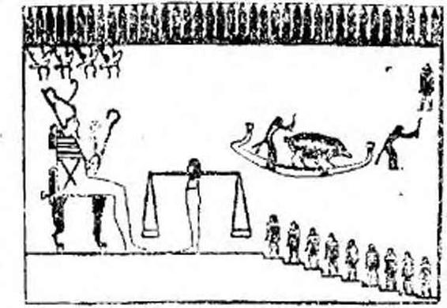
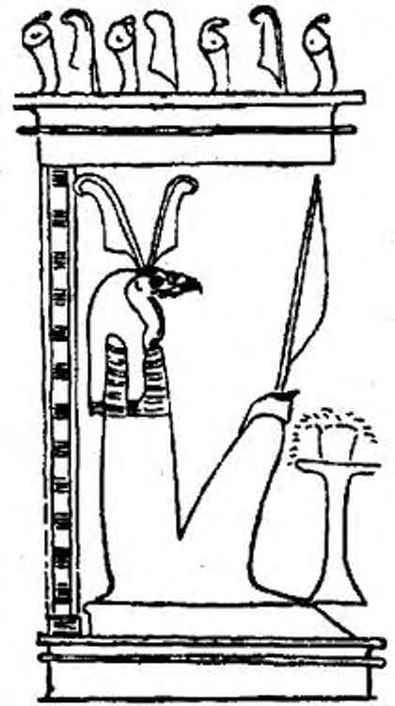
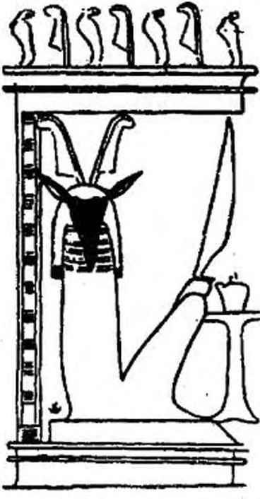

Şekil — 10
Solda : Stat, tüyler takmış ve şeritler kuşanmış sihir sembolü. Sağda Osiris’in baş ve kolları ile temsil edilmiş kat kat djed’i. Amon’un boynuzları altındaki dört omurga halkası ve iki yılan (uroeus) omurgada bulunan hayat akımının, ateş - yılan’ın sembolüdür. Hayat nefesi olan bu akımı rahip «ısıtılmak ve isis’in sıcaklığı ile örtülmek« istenen ölünün ensesine ellerini koyarak nakleder.
vücuduna koydurmuş, mihraplara on İki ateş yaktırmış, tabutunun Üzerinde Ölüler Kitabının LXXII. bölümünün kopyasının bırakılmasını sağlamıştır. - Bu bölüm aşağı dünyada yolunu kaybetmemek için ne yapmak gerektiğini göstermektedir. - Tanrılar bilirler ki ölü, yeşil porselenden yapılmış, üzerine şehirlerin koruyucu ruhlarının resimleri yapılarak süslenmiş ve sedir yağıyla ovulmuş bir güneş kayığının pruvasına kendisini temsil eden bir heykelcik konulmasını vasiyet etmeyi unutmamıştır. Thot ve Anubis, tanrıların terazisini sorguya çekerler...
Eğer Thot, elindeki tabletin üzerine terazinin iki kefesinin dengede olduğunu yazabilirse - kefelerden birinde ölünün açık iradesinin ve ahlâkî vicdanının yeri olan kalbi, öbüründe Maât’- ın, gerçeğin tüyü vardır. O zaman Ibis başlı Thot ölüler tanrısı Osiris'e döner ve şöyle der : «Palanca, terazide tartıldı Kalbi doğrudur; çünkü bu kalp bir tüyden daha ağır değil.»
O zaman ölü Maa Kherou olur - doğru ve temize çıkmış - ... Kalbi, «annesinin kalbi», «doğduğundaki kalbi» canlıyken sahip olduğu kalp, ona karşı tanıklık etmemiş, tanrılar karşısında onu ezmemiştir. O zaman ölü, tartılmış, tam, eksiksiz olarak, ebediyet sürdükçe, istediği her yere gidebilir: yaşayanların toprağına, aşağı dünyanın on İki bölgesine veya Samanyolunun ta derinliklerine... Abydos’a gidip Mısır tanrılarının yüzünü görebilir... Ve Maat, ölünün omurgasına sihirli akımını, ebediyen geçirebilir, omuzlarının Ye göğsünün kaslarını kucaklayabilir, yani onları nefesi ile etkileyebilir. Ölü, «çok güçlü sihir sözcükleri» duymuştur; günah çıkarmasından sonra «söz’ün bir gerçeği» Osiris olmuştur. Yeniden Râ’da doğan Osiris gibi, aydınlatan ışık olabilirdi. Mahkeme önüne gölgesi (dublesi), zekâsı, belleği ile çıkmış ve hakimler önüne giderken kötülük yapıcı tanrıların, aşağıya giden ölülere kurmasını bildikleri bütün tuzaklardan kaçmasını becerebilmişti; «fiilleri ortasında tabutuna yattıktan sonra yıldızlı phoenix olmuştu».
«SEKHEM’İN ŞEYLERİNİN» NE OLDUĞUNU BİLMEK
Evet, doğru bulunduktan sonra - çünkü o artık, tanrılarca kabul edilişinden beri, ölü değildir - gökyüzünde on binlerce parçacıktan guruplaşmış «yok olmazlar«ın yanına, hiç de hayâli olmayan, ebediyen her çeşit yiyeceğin bol olduğu, halk arasında «İalou Tarlaları», «Yiyecek Tarlaları» veya «Kamış Tarlaları» denilen yerlere gidebilecektir. Udjat’ın gözbebeğinde, kollarını kaldırmış, iki bacağında yılan, bası güneş kursuyla süslü bir tanrı görecektir. Dört çeşit ışığı ayırt edebilecektir: güneş ışığı ile ayni olmayan «Seth’in ışığı»; karanlıkların ısısı: yaradılışın başlangıcındaki ışık; nihavet. mezarın arkasındaki- -Amibisin ışığı. İalou tarlalarında ruhların «bacaklarının bütün gücüyle» mutlu yerlere koşup, yaşam akımından yoksun, kovulmuş ruhlardan kaçtıklarını görür. Güneşten çıkan güçler, sayesinde «göklerin gezegenlere bağlandığı sonsuzluksan gelen akımların rüzgârlarından bir kısmı kendilerine bırakılmış Işık Saçanlara yaklaşır. (Virey, Religion Egyptienne: Mısır Dini.) Meraklı yaşayanların, önlerinde görünmeyen kapılar açılmadan bilmeye çalıştıkları her şeyi öğreneceklerdir. «Sekhem’in şeylerini», yani görünür evrenin aydınlatılışını ve esrarlı arınmalardan sonra ruhların neyi simgelediğini bileceklerdir. İalou alanlarında, ne şekli, ne ağırlığı, ne zamanı olan, mavimsi yeşil, kaygan ve sisler içinde, belirsiz olan her şeyin dehşeti ile dolu «milyonlarca yılın Yıkıcıları»nın egemen olduğu bölgelerden uzakta, firavun ruhlarının kazlar gibi gakgakladığını işiteceklerdir. Doğru kişi, suları o kadar mavi Nil’in, Tanrısal Nehrin kıyılarında, çocukluk perçemlerini kestiği günden beri o kadar sık hayal ettiği o cennetleri tanıyacaktır. Ölülerin Mısır’ında, başka bir Nil’i, Semâvl Nil’i, uzayda olan, Teb’in meyva bahçeleri kadar yeşil olan çayırları görecektir. Korkunç ruh tartılması sınavından sonra, artık mutlu olmalıdır; çünkü göklerdeki bahçelerde, firavun inciri ağaçlarının gölgesinin serinliğini tadabilen doğru kişiler arasında olacaktır. Kendisi ve ondan sonra ölüm krallığında doğacak olanların hepsi tanrıçaların sütünden içeceklerdir. Bunun için Piramit Tekstlerinde onlara «ağızları doymuş mutlular» denmektedir,
İsmini Thot tabletlerinde okuduktan sonra, Doğru kişi, ışığın ve sözün (kelâm) başlangıcında bulunan ilk titreşimi sakla-

Şekil —11
Toutankhamon'un mumyasının göğsü üzerindeki dört altın kolyenin, siyah reçineden, altın kakmalı, üzerine Bennou kuşunu anlatan bir metin oyulmuş kalp skarabesinin, (kamanın sapı tarafında); yönü ritüel olarak -sapı karnın sağ tarafına, alt ucu sol tarafına dönük- yerleştirilmiş, altından cenaze hançerinin; altın karın halkasının ritüel yerleri. Lord Carnarvon, kral mumyasının keten sargılarını çözdüğünde, üst üste 13 kat teşkil eden 17 gurup sargı arasında 35 muska saymıştır. (Jean Capart, Tout-Ankh-Amon). Yukarıdaki döküman «Griffith Intttute, Ashmolean Museum, Oxford«un bir klişesine göre yayınlanmış, jean Capart'ca yeniden kopye edilmiştir.
yan «Kozmik Yumurta»yı, «Yumurtası içindeki Râ»yı seyredecek; ruhu Tanrısal İnek Hathor-Nouit’in memesinden ebediyen akan Semâvî Nil’in, yani Samanyolu’nun önünde sevinç duyacaktır. «Zekâyla sarılmış Işık Saçanlardan, Amentt’nin Khûları önünde, rahibin mumyası başında okuduğu duayı hatırlayacaktır: «Beni takdîmeler alanında, dokuz dirsek (fr. Coudée; dirsekten parmak uçlarına kadar, yaklaşık 0.50 M. lik bir uzunluk) boyunda bir Khû yap. Bana bak: ben doğdum ve yaşayan bir Khû şeklinde çıkıyorum». Râ’nın kendi ışığı olan phallus’ünü, güneş ışığının her yere nüfûz edici şiddetini simgeleyen, Osiris’in aslan kafalı uzvunu da görecek; hiçlikte başıboş dolaşan, başsız, boyunları aşağıda, yaşam akımlarından yoksun «tersine dönmüş» leri, lanetlenmişleri de görecektir. Semâvî Site ve ayni zamanda «Osiris’in tabutu tarafından dünyanın aydınlatılışı» olan, Sek- hem’de «Şeylerin Gecesi» önünde bulunacaktır. Kendi İç organlarını yiyen ölü krallardan, pislik haline gelmiş lanetlemelerin belkemiklerini, İçinde kalmış azıcık büyüsel gücü emmek ama- cıyle kıran ve böylece onları ebediyen kişilikten, dünyadaki eski mevcudiyetlerini yeniden gözden geçirmek arzusundan yoksun bırakan işkenceci tanrılardan kaçacakdır. Uzun zamandan beri kafası kesilmiş vücutları içindeki belleksiz ruhların bulunduğu Buto bölgesindeki faaliyeti, kötü ruhlarla çekişen canavarları kovacakdır. İnek sütüyle yıkandıktan, sırtı bir avuç güherçile ile temizlendikten, el ve ayaklarının yerinde olduğunu gördükten, bacaklarının hareketine ve konuşma gücüne kavuştuktan sonra, Doğru kişi uzun bir değnek alır ve gök yollarında yorulmadan, Kolpaktchy’nin yazdığına göre, «kendisine yaklaşmaması İçin ölümünü uzakta tutarak» dolaşabilir. Artık o, «tabutunda uzanmış yatarken» onu ayağa kaldıran Anubis’e eşit olmuştur. Gökyüzünün dört kapısı önünde; Râ’nın esrarlı ışınımlarının önünde; «Shou’nun gücünün dayandığı gök mekaniği kanunlarının ifadesi» olan yedi basamaklı Schmoun merdiveni önünde; isis’in «havadan yapılmış» yedi gömleğinin önünde; her yaradılışın tohumunu kendinde saklayan evrensel tohum (sperm) Noun’un önünde, sevinci gölgesizdir; kırk iki tanrının mahkemesi önünde temize çıkmış olan o, önünde ışık-ruh’larla kayna-
şan Amenti’nin pırıl pınl parladığını görünce, ebediyen yükselmiş olacaktır. Çünkü bu Piramit metinlerinde yazılmıştır; çok sonraları ortodoks hıristiyanların kutsal kitaplarında yazılmış olduğu gibi: Salihlere (Doğrulara) değerlenme (izzet:: gloire); çünkü onlar Cennette ışık saçan yıldızlar gibi olacaklar...
Amenemhet’in mezarında bulunmuş ve Jean Capart tarafından çevrilmiş, yakınlarının bizzat ölüye hitab ettikleri şu dua ne kadar güzeldir: «Heykellerin mihraplarında ebediyen kalsın... Bedenin nekropoldeki mezarında sabit dursun.. Batı güzelliklerinle sevinsin... Batı dağından arzunca çıkıp girebilesin, önünde Öbür dünya kapılarının ardına kadar açıldığını göresin... Dağda yükseldiği zaman Râ’ya tapabilesin ve ufkun eşiğinde dinlenirken onu yüceltebilesin... Etrâfı ebedi bahçelerle çevrili gök havuzunun kıyılarında her zaman gezebilesin...»
V.BAB
BÜTÜN VARLIKLARIN SONRADAN NE OLDUKLARINI GÖRMEK. Yedi yüz sihirli formül sayesinde, firavunlar devrinde yaşayanlar, İnce keten sargılarla sarmalanmış, göğsündeki Osiris’te dirilmeyi simgeleyen altın takısı, vücudunda hiç durmadan akacak İsis'in kanını temsil eden kırmızı donuk akikten (Jaspe) düğümü, kalbini gösteren yeşil taştan skarabesi olan mumyayı terk eder etmez, ölünün dublesinin sonraki gelişmesinde hazır bulunmanın sırrını biliyorlardı. Şüphesiz tanrılar mahkemesinde doğrulardan bulunan ölülere, sayısız mutluluklar vaad ediliyordu. Tanrılar için, yeryüzünde geçirilen yaşamın azıcık bir şey sayıldığı açıkça bellidir: Kum çölündeki bir tek kum tanesi gibi. Bununla beraber, gelecekteki tanrılaşmaya rağmen, bu fâni dünyada kabil olduğu kadar uzun zaman kalmak, istenir bir şeydir. Eski bir Mısır şarkısında söylendiği gibi: «Bira testileri arasında, dostları ile beraber, neş’eyle oturmak ve bir gün, gökün dibinde, onca hayvan kafalı tanrı arasında, yüceltileceğim hiç düşünmemek.
*
**
Jean Capart, ruhun tartılması sahnelerine refakat eden cenaze papirüsleri, «bütün karışıklıklarının tamamen ortadan kalkmadığı esrarlı bir dille kaleme alınmıştır« diye yazmaktadır. Mezarların duvarlarına resmi yapılmış birçok sahne, şüphesiz hiçbir zaman izah edilmemiş olarak kalacaktır. Örneğin Teb’de,
V. Ramses’in mezarındaki Güneşin cehenneme iniş sahnesi. Orada, ölülerin güneşinin cehennemliklerle dolu mağaralarla simgelenmiş cehennemin derinliklerine daldığı görülür. Zaten, ölüler Kitabımız bazı Bab'ları, hiçbir insana açıklamanın yasak olduğu korkunç sırları ima etmektedir: «Çünkü inisiye olmayan-
lar gizil şeyleri bilemezler ve gizli mekânın formülünü tanıya- mazlar.* Bize, yarıtanrının (demiurge; Osiris olmalı -Ç.N.) kendini, insanı ve evreni niçin yarattığını, eşsiz, fakat çok karanlık bir monolog halinde anlattığı sözlerini nakleden XVII. Bab’ın açıkladığı gibi, ancak tanrılar insanın nereden gelip nereye gittiğini bilirler. Yaratılış şiirinde insanların yazgısını tanımlar;

Şekil —12
Solda, Anubis, ölünün arkasında, ritüel koruma yerinde, tahta bir çekmecedeki iç organlarını kendi taşıyan ölüyü koruyor. Omurga gibi, iç organların da çok kutsal bir karakteri vardır. Onlar, ölünün onsuz, kişilik ve şuurunu Douat evreninde koruyamayacağı «sihir gücüne» sahiptirler. Her ölü, daima «sihir gücü» peşindeki, öbür dünyada kaynaşan kötü ruhlar tarafından kendi iç organlarının çatınmamasına özellikle dikkat etmelidir. Ortada, ölü, köpek kafalı maymunların tapındığı Güneş Kayığının baş tarafında, Râ’nın önünde secdeye kapanmaktadır. Kayığın her iki tarafında, İsis ve Nephtis, ölüyü bekleyen gelecek milyonlarca yıllık mevcudiyeti simgeleyen ankh haçını (crotx ansée) taşımaktadırlar. - Cadet Papirüsündeki son sahnenin vinyetinden alınmıştır.
Onları, doğru ve iyi İçin, hüküm gününe (kıyamete) kadar savaşıp yaratıcı sözün, (kelâm’ın) zaferini sağlarlarsa, dünyadan gökyüzüne götüreceğini anlatır. (A. Moret, L'Egypte pharaonique: Firavunların Mısırı.) Yarıtanrının her cümlesi tam bir şarkı teması gibi, bir anlatış biçimi altında ortaya konmuştur. Bu ancak inisiyelerin gerçek anlamını keşfetmek için yorumlayabildikleri esrarlı sözcüklerin bir çeşit musikisidir. Tanrıbilimci- ler bu ünlü XVII. Bab’a bir yorum getirdiler, «soru-cevap biçiminde, her esas ibareye bağlanmış açıklamanın (glose) kendisi de karanlık olduğundan, bazan bir İkinci, hatta üçüncü bir anlatım gerekti. Bu bilgiç yöntem ile salte karşılaştırmasının (Sais -şehir- den türetilmiş bir nom ve bir sülâle adı) XVII. Bab’da muhafaza ettiği üçlü yorum, çiçekli süslemelerini ilk şarkının refakatinde işleyen İkili ve üçlü kontrpuan'dır (: Birkaç parçadan oluşan musiki tertibi) -A. Moret, Aynı yapıt-, ölüler Kitabının CXXV ile birlikte olan ana temasının özeti -olumsuz günah çıkarma- ölü Amenti’ye girerken okunması gereken tapınma dualarının en bellibaşlılarından biridir: «Ben gökyüzü mekânlarının, uzay, sonu olmayan bir sıvı okyanusu gibi iken, zamanların ve şekillerin tanrısıyım. Hiç kimse beni doğurmadı, çünkü her varlıktan daha evvel doğmuştum. Benim adlandırıldığını bütün isimlerin sihir gücünün şefaati ile gök hiyerarşisini ve kendi kendini yeniden yaratan maddeyi yarattım... Ben Atoum’um ve kozmik okyanusta hiçbir hayat izi yokken ben gene mevcuttum. Ben evrenin başlangıcı ve büyük tabutun içine uzanmış olacağı zaman sonu olacak olanım. Yokluktan, nehrin sularının silindiği gibi, çoktan silinmiş varlıkların pınarını fışkırttım ve bedenimde yarın’ın sayısız varlığını da taşıyorum... Ben Atoum’um ve biliyorum ki ölüler Osiriste ebedîdirler. Çünkü Osiris, doğru ve yardım etmeyi sevenler ve Mısır toprağından kötülüğü kovanlar için, ayni zamanda ebedi ve sonsuzdur. Büyük yıkımdan sonra, Osiris’in organları oraya buraya dağıldıktan sonra, dünyalar çöktükten sonra, gök âlemlerinin dengesini yeniden kurdum, onların parlaklığını İade ettim ve ışığı ışığım olan Râ’nın doğuşunu gördüm... Ben Atoum’um, Heliopolis’in tanrısal Kedisiyim. Ey temize çıkmış ölüler, siz ki canlı iken kötülük ruhuna karşı savaştınız, Amenti’de Osiris’in hizmetkârlarını parçalayan ve cehennem kazanlarında haşlayan uzun bıçaklı ruhları sizden uzaklaştıracağım. Kadavra ve pislikleri yiyen şeytanları ölülerden uzaklaştıracağım; çünkü ben gökyüzü mekânlarının Atoumu, başlangıçların ve dünyanın sonunun Atoum’uyum.
*
**
Ölüler, tanrıların dünyasına Tanrısal inek Menourit’in sırtı na uzanıp giderler. Ruhun rahatlığını ve dirilmeyi sağlayan «dJet« ve *that» sembollerinin koruması altındadırlar. Bütün ölüler, Nil'in öbür kıyısında «batan Güneşin mutlu topraklarına bırakılmış, babadan oğula, son kuşağa kadar, mumyalanmış Osi- ris’i, Amenti’nin efendisi, ayak parmaklarına kadar kokulu şeritlere sarılmış, mumyalanmış Osiris'i seyredeceklerdir. Herbiri onun önüne çıktığı zaman ona bir hayat pırıltısı verecek ve Osiris aracılığı ile ebedi olacaktır... Ölüler ona gideceklerdir. Çünkü onları doğrulayacak yalnız odur, çünkü o, herşeyin son defa olmak üzere yeniden başladığı geniş bir evrende egemendir. Mevcudiyetleri ile, mistik olarak, onunla birleşecekler «İsa’da ölen Hıristiyanlar gibi, Osiris - falanca olacaklardır» (Kolpaktchy.)
*
* *
Osiris, Güneş’in Gözü; insanın iki mevcudiyeti arasında, hiç bir kesintiye yer vermeyen sürekliliği simgeler. Bunlardan biri kısa ve görece (rölatif), insanın dünyadaki yaşamı; öbürü ebedî, hayâlî değil fakat gerçek olan yaşamıdır. Doğum ve ebediyet arasında hiçbir aralık yoktur. İki halin ikisi de birbirine vesile, sebeptir. Çünkü otuz beş sülâlenin çağdaşı olan Mısırlılar, bedenin, k â’sı, ölümsüz dublesi ile, çürüyemeyeceğini, mezarda fizik yok oluşun vuku bulmayacağını, fakat öbür dünyanın eşiğine bırakılmış bedenin, doğanın bize sunduğu çeşitli örneklere bakarsak, değişime uğradığına inanıyorlardı. Bu sırların ana hatlarına artık sahip değiliz; ne ölülerin esrarlı değişimini ne de, sihir sözcükleri inanılmaz güçlere sahip «kudret sözcüklerini» bilenler için Amon mabetlerinin duvarlarının şeffaflaşabildiğinin nedenini bugün açıklayabiliyoruz. Beş bin yıl evvelki İnislye rahiplerin eylemsel büyüsü (magie opératoire) bizi güldürmemelidir. XX. yüzyıl fizikçilerinin maddeyi parçalayabildiklerini, anti- maddeyi keşfettiklerini yadsıyamayız. Bu inisiye rahiplerin büyüsü, ruhları ölüm dediğimiz yere, yani sonraki hayata taşıyan görünmez ışındı, ve ölülerin koruyucusu Osiris sayesinde, her doğru yolu bulmuş (salih), ruh tartılması sınavından sonra, Osiris’in krallığında «yüz milyon yıl« seyir (contemplation) halinde kalabilirdi. Bu acayip ölüm evreni, geçmiş ve gelecekte ölçülebilir olanı kaldırıyor; ölü için şekiller, simya (alşimi: Eskilerin maddelerin değişim bilgisi), akrabalıklar anlamını kaybediyordu. Ölü, Gılgameş Destanında ve ölüler Kitabının XVII. Babında anlatılan kozmik yıkımları görmüş bulunan tanrılara eşit olabileceğini de biliyordu. Ne şaşırtıcı görüş ve ne keşif!.
*
**
Bir duvar üstüne bir çehre çizen san’atkarın hayat yarattığına, ağızdan çıkan her sözcüğün bir hayat biçimi olduğuna inanan bir halkın saplantılarının nereye kadar gittiği hiç bilinebilir mı? -II. Ramses’in, ellerini İyi kullanmasını bilen her usta kopyacının karnını İyi doyurmasını, her on yıl başlarını yağla-

Şekil — 13
Ruhlar Çıkış Merdiveni'nin dokuz 'basamağını tırmanıyorlar. Kabul edilmeden önce önünde itirafta bulunacakları Osiris'e doğru gidiyorlar. Eğer «Doğrulardan: Salihlerden bulunurlarsa, Ro-Setaou Kapısında Işık Saçanlar haline gelecekleri Douat'ın Yüksek Bölgesine gidecekler. -METİN: Yargılanmamın Gecesine doğru yürüyorum. Kayıkta «Tahribedici Domuz*, «Milyonlarca Yılın Yutucusu> kalpleri, yani yeryüzünde geçmiş hayatlarındaki filleri, Osiris'in önüne yerleştirilmiş Yedi Ruh'un terazisinde Maat'ın tüyü olan Gerçeğin Tüyü kadar hafif olmayanları bekliyor. Vay «Senelerin Yutucusunun Kayığında yer alacak kovulmuşlara, çünkü onların herbiri *Sheniu Odasının acımasız parmaklı on iki işkencecisinin refâkatinde, her şeyin kuruyup, silindiği Amenti’nin pis bölgesini, o «Aouai Ateşi Gecesi«ni tanıyacaklardır. -W. Budge, Osiris and the Egyptian Res- surection : Osiris ve Mısır'da Yeniden diriliş inancı.
masını bildiğini hatırlayalım.- Bu fantastik gerçeküstücülüğü, bu irreel âlemin büyüleyici gücünü, bu Osiris krallığının soğuk parlaklığını anlayabilecek miyiz? Bu ölüm dünyasını hepimiz tanıyacağız. Altı bin yıldan daha önceleri Mısırlıların bulduğu, düzeni Amon mabetlerinin İnisiyeleri olan cesur araştırıcılarca keşfedilen bu dünya, bizim için de o kadar ulu, o kadar değişmez mi olacak?
Evet, bundan böyle temize çıkmış ölü, derinliklerinde Ori- on’un kıvılcımlandığı, konstellasyonların, parlak ruh pleyadları- nın (Pléiades: Ülker burcu) benzeri olarak Douat’ın göküne yükselecektir. Nihayet, Gök Boğasını görecek, tanrılarla ayni yiyecekleri yiyecektir. Oysa, o belki Nil Vadisinde, ancak bayram günleri çiğ soğan yiyebilen, darlık içinde bir kimseydi. Belki onca karanlık olan o, sabah yıldızının parlak bir bölümü olacak, gö- kün bütün kapıları, önünde açılacaktır; çünkü o, kapıları rezelerinde çevirten sihirli sözcükleri söylemesini bilecektir... Bin* lerce yıldır dola§an Bozulmazlara karışacaktır. Dünyadaki kil duvarlı yıkıntı evinde, yaşamında o kadar gösterişsiz olan, o parlak yeryüzünden bir nefes kadar çabuk silindikten sonra, gerçekleşecek geleceğinin bu muhteşem hayalini nasıl düşünebilirdi? Osiris olmak! Evet, bütün servetini iki nasırlı eli arasında tutabilecek olan o, Osiris’in parlaklığına sahip olacak, yüzlerce kuşağın asırlar boyu seyredeceği parlaklığını bir gün bile kaybetmeyen o yıldız olacaktır... Osiris olarak evrensel ritimlere katılacak, tanrılara eşit olacak, insanların vücudu gibi yaşayan sonsuz olacaktır...
ÖLÜLER KİTABI BİZE TANRILAR VE İNSANLAR ARASINDA İYİ İLE KÖTÜYÜ KARSI KARŞIYA GETİREN ÇEKİŞMEYİ AÇIKLAR.
Simgesi A d o n h i s yılanı olan Seth, kötülüğün kökenidjr. Işık doğmadan, evrenin kurucu elemanları tamamlanıp bir düzen meydana getirilmeden, yaradılış şekilleri «gökün doğusunda tanrıça Nouit’in jenital bölümlerinden ruhlar ve tanrılar oluşmadan evvel», Seth mevcut idi. Tanrıça, Doğu ve Batı arasında eğilmiş, elleri ve ayakları İle, Doğuya ve Batıya dokunur. Seth;
Kabil, Habilin kardeşi olduğu gibi, Osiris’in düşmanı ve kardeşi dir. Bize İyilik ve kötülük, aydınlıkta ve karanlıkta sırlar veya korkulacak şeyler böyle açıklanmaktadır. Râ’nın ilk kez Mısır toprağını aydınlattığından beri İyi ve Kötü, birbirine meydan okumaktadır. Ve bu, Çifte Zambak ve Papirüs Krallığında, her- biri kırkar bin yıl saltanat süren efsânevi firavunların ilk gününden beri böyledir. Genel yıkımların, uygarlıkların çöküşünün, başlangıçların tufanlarının, tanrılar arasındaki acımasız savaşların anısını saklayan bu toprak üzerinde İyi ve Kötü birbirini kovalar ve Ölüler Kitabı bunu bize açıkça anlatır. Kutsal metinler bize, Osiris’in şefaatiyle, ölülerin Amenti’ye İlk adımlarından itibaren işkenceci şeytanlardan korunacaklarını anlatır. Osiris sayesinde ölüler tam kalacaklar, yani aşağı dünyada kimlikleri parçalanmayacaktır. Osiris’in vücudu kardeşi tarafından on dört parçaya ayrılmış ve bu parçalar Mısır’ın her tarafına dağılmıştı. ölüler kötü nefesten veya lanetlenmişlerin beddualarından korkmayacaklardır; çünkü İsis onlar için «ölümsüzlüğü veren ilâcı keşfetmiştir» (Herodot.).
AĞZIN, GÖZLERİN KULAKLARIN AÇILMASI.
Firavunların tacındaki Naja yılanının -İki Mısır’ı; aynı zamanda Doğu ve Batıyı simgelemektedir- kıvrık başı marangozların kullandığına benzer (fr. Herminette) «Anubis’in âleti» denilen bir büyü aracı ile yapılan bir theurgie (Yüksek ruhlarla ilişki kurmaya dayanan bir çeşit sihir) işlemi ağız açma ameliyesi sonucu ölü, öbür dünyada yaşayabilmek için, kaçınılmaz bir gereksinme olan yaşamsal fakültelerine yeniden kavuşuyordu.
Kher-heb rahibi, «Karnak’ta Gökyüzü Kapılarının Açıcısı», «Kitabın eskiden beri sahibi», Ölünün arkadan, omurgadan, «kutsal akımı», «koruyucu tesiri», san ankhu’yu alabilmesi İçin sihir yöntemlerinden faydalanıyordu. (Ekseri İsis’in mabedin iç ve başlıca bölümünde (naos), firavunun arkasında, elini, kralın ensesi hizâsında, ona manyetik paslarla kutsal akımı-

Şekil — 14
Douat’ın kapılarının eli bıçaklı bekçileri. British Museum'daki Anhai Papirüsü CXLVÎ. Bab.
sotpou sa-, iletmek Üzere kaldırmış vaziyette durduğu görülür.) Bazan bu ağız açılışı «kurban edilmiş bir boğanın testikülleri: husyeleri» ile yapılmaktaydı. (Lefebure, Bull. Egypt. IL cilt, sf. 182.) A. Moret, belki de bu rltin, cenaze kültünün en önemlisi olduğunu yazar. Çünkü rit, mumyalanmış, sarılıp sarmalanmış cesede dilini ve sözün sahip olduğu yaratıcı gücü, görüşü, İşitmeyi, tat, koku, dokunma duygusunu, kolların ve bacakların hareket serbestliğini iade ediyordu. Piramitler döneminden, Roma çağının sonuna kadar mezarlarda kısaltılmış veya tam; resimli, resimsiz papirüslerde «ölünün gözünü açmak İçin» formüllere rast- lanmaktadır. Evren ile birlikte yaratılan canlılar serisini simgeleyen bir ağ ile örtülmüş «yüzü açma» ritleri, kutsal şehir Aby- dos'ta, naos'un (mabedin iç ve en önemli yeri) kapılarını iki eliyle açan rahibin figürü ile birliktedir. Bu sonuncu, evrenin daraltılmış bir simgesini temsil etmektedir. «Mumyanın dinlendiği* aynı zamanda evreni simgeleyen mezar veya naos, ölünün heykelini veya mumyayı koymak için kapıları açılınca ayni İlâhî İşitilir.» (Schlaparelil, Libro dei funerali, II. cilt.) (Edfou ve Den- derah anıtları da görülebilir.)
Aile kültünün rahibi olan oğul -firavunun tanrısal kültün rahibi olduğu gibi- babasının heykel veya mumyasına sarılıyor, ateşle mumyanın başını veya heykelciği aydınlatıyordu. Çünkü alev, güneş olan Horus’un gözünden gelmiş, öbür dünyada ölünün düşmanlarını kaçıracak olan sihir akımını iletmek İçin parlıyordu. Sonra, kurban edilmiş bir hayvanın yüreği veya budu ile, ölünün yüzü okşanıyor, «Büyük Sihirbaz» denen yılan şeklinde, tanrısal bir aracın (herminette) yardımı ile ölünün ağzının, gözlerinin, kulaklarının -lâkırdı edebilmesi, salgılarını ve hümörlerini (eski tıpta vücudun tabiatını oluşturduğu düşünülen dört unsur: kan, safra, balgam ve sevda -arapça çok kara anlamına-) kullanabilmesi amacıyle açılmasına girişiliyordu. Ancak o zaman ona, «ruhunun göğsünde olacağı, tam kendisinin olan arkasındaki şeklini tanıyacağı» söylenecekti.
*SERDAB’LARIN CANLI HEYKELLERİ» ÖNÜNDE BİR SEREMONİNİN ON BİR AŞAMADA YAPILIŞI.
Bayan Weymant - Ronday şöyle yazmaktadır: Ağız açma seremonisi, heykelin (ölüyü, dublesini temsil eden) el ve ayaklarını yumuşatan gerçek «cevher değişimi» - transsubstantiation: Bir maddenin başka bir maddeye dönüşmesi - güneş ve Osiris doktrinlerinden türemiş bir dizi özel safhadan (epizoddan) oluşur: 1 — Ölünün heykeli, yüzü güneye doğru, yeryüzü gibi şekil verilmiş bir kum tabakası üzerine konur. 2 — Birbiri ardından birçok defa tütsülenir. 3 — Dörder serilik iki dizi kaba konulmuş su İle, dört yönün tanrıları adına (Horus, Seth, Thot ve Se- pa) heykel temizlenir. 4 — Heykelin ağzı lo natron (doğal sodyum karbonat) topağı -beş güney, beş kuzey İçin- ve beş topak tütsü takdim edilerek temizlenir. Bu topaklar ayini yönetenin avucuna aldığı küçük bir sepete konulur» ve sepet iki defa ağıza, iki defa gözlere, bir defa heykelin eline olmak üzere kaç topak varsa o kadar kez olmak üzere götürür.» 5 — Bu temizleyici ritler, heykele takdim edilen tütsü tanecikleri ile, heykel baltan aşağı tütsülenerek son bulur. Bundan sonra: 6 — Bir deriye sarılmış ve bir yatakta uyur bulunan bir şahsın uyandırılmasını anlatan anlaşılmaz bölüm. 7 — Ayini yapanların dördünden birinin (Horus’un dört oğlunu temsilen) heykelin ağzını küçük parmağı ile açıp heykele bir oğlun babasına hitap eder gibi hitap etmesi. 8 — Bir öküz, bir ceylan, bir kazın kurban edilmesi. 9 — Heykele öküzün ön ayağı ve yüreğinin takdim edilmesi. 10 — Heykele önceden ayrılmış parçanın, kanlı et ile ağzını ve gözlerini oğuşturur gibi yaparak, tattırma teşebbüsü. 11 — Ağzın ve gözlerin çeşitli araçlarla açılması: Ağzı kıvrık marangoz kalemi ve werhi-kaou denen bir sihir objesi. Bu sonuncu alet ölünün «ağzını ve gözünü açmak »la kalmıyor, aynı zamanda «tanrılar üzerinde egemenliği» sağlıyordu. Tanımlanan hareketlerin her birini açıklayan lakırdılarla süren seremoni, biter bitmez yeniden başlıyordu. Ağız açma epizodu, bu sefer yeni bir dizi araç kullanılarak yapılıyordu: Demir kalem, kırmızıya boyanmış parmak, kırmızı taşların konulduğu bir kese, dört briket (x), v.s. Heykelin ağzına, sonra, özel bir madde (bir tür iç yağı veya tereyağı) sürülüyor, arkasından sütle ıslatılıyordu. Öküz, ceylan ve kazın kurban edilmesi tekrarlanıyor ve seremoni heykelin tuvaletinin yapılması ile son buluyordu: Başına (coufiyeh) giydiriliyor, ona çeşitli renklerde kumaş şeritler takdim ediliyor, koku sürülüyor, yüzü boyanıyor, kral elbiseleri giydiriliyordu. Nihayet o, tütsüleniyor ve bu operasyon Uraeus (xx) tanrıçası ve bütün Mısır tanrıları adına tekrarlanıyordu. Seremoni çıkışında bir yemek veriliyor, yer süpürülüyor, «dokuz arkadaş veya saray adamı gelip, merasimle heykeli kaldırıyorlardı.» (Bu «canlı
(x ) Briquette, sıkıştırılmış turb veya kömür tozu parçacığı olup yakacak olarak kullanılırsa da, buradaki anlamı şüphelidir.
(xx) URAEUS . Tanrısallığın ve krallığın, Doğu ve Batının, ayni zamanda Yukarı ve Aşağı Mısırın sembolü Naja yılanı.
heykeller» hakkında: Bedenler, ölülerin ebediyet portreleri kimdi, canlı renklerle boyanmış, yüzleri kakmayla yapılmış gözlerle aydınlanan, keten giydirilmiş, mezarların serdab’larına konmuş; Jean Capart, Mempys, XVIII. Bab.) Bu serdab’lara, yani (Mastabaların: I. İmparatorluk döneminden, dört açılı eski Mısır mezarları )nın mihraplarında oyulmuş yuvacıklara, Eski Mısırlıların çok karışık cenaze merasimlerinden sonra, ölünün canlı heykelleri -genellikle Yukan ve Aşağı Mısın simgeleyen iki heykelcik- konuyordu, ölünün akrabalarının talimatı üzerine ve bu iş için ayırdıkları paranın önemine göre, rahipler bu heykellerin önünde, dumanı «ebedî bedenin» burun deliklerine zevk veren tütsü taneciklerini muntazaman yakıyorlar ve ölüye borçlu olunan kurban hizmetlerini sağlıyorlardı. Sürekli vakıflar rahip ailelerine ölüler kültünün sürdürülmesinde gerekli kaynakları sağlıyordu. Jean Capart: «Bazı mezarlarda vakfı tesis eden vasiyetnamelerin kopyaları bulunmuştur» diye yazmaktadır. Bazan ölmüş bulunan kimsenin kendisi servetinden rahiplere ayrılacak bölümü göstermiş ve «hangi şartlar altında bir nesilden öbürüne geçeceğini» tayin etmiş bulunuyordu. (J. Capart). Ve eğer, özellikle hizmetindeki bir rahip veya kendi neslinden biri adalet nezdinde İtirazda bulunmaya cesaret ederse veya ölünün isteklerini tanımamazlıktan gelirse, mezanna tecavüz ederse, serdab’ındaki dublesine hürmetsizlikte bulunursa ölü onu, ölülerin kalbinin tartıldığı Anubis'in terazisinde, ünlü, tanrılar mahkemesiyle tehdit ediyordu.
«SANA KALBİNİ KARNINDA GETİRİYORUM.»
Özetle, ayrıntıları Mısır’ın en eski doktrinlerine dayanan ağzın ve gözlerin açılma seremonileri, ölünün ruhunu bulmasını ve bir «yaşam akımı geçen» vücudunu kullanabilmesini sağlıyordu. Kırk iki adâlet tanrısı ve ebediyen tout ankh olan Osiris’in önüne çıkmadan, ölünün mumyası «Altın Salon* daki çakal başlı Anubis tarafından sarılıp sarmalanıyor ve üstüne kokular sürülüyordu. «Horus ve Anubis cenaze sargılarını düzeltirler. Thot,